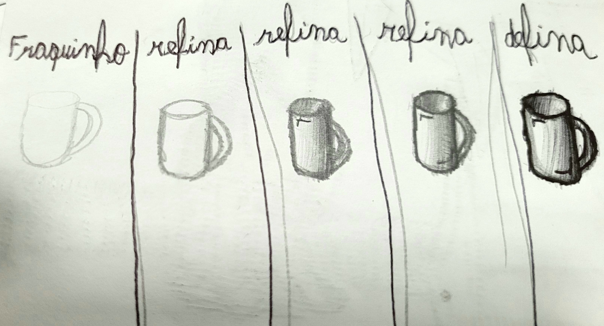

Lição 1: Refinação do desenho
Cara, se você quer aprender técnicas pra desenhar melhor, você tá no lugar certo, eu vou te ensinar 3 táticas de desenho em todo esse site. Mas uma coisa muito importante é que você não pode ser perfeccionista. Guarde bem isso, não seja perfeccionista. Pois é, continuando, quando você começa um desenho, você faz a base, e com essa técnica você começa a base fraquinho, depois vai refinando até você achar que tá bom.
Eu sei que a minha letra é muito feia, mas vai praticando essa técnica, tenta fazer as seguintes coisas:
- Uma xícara de café
- Um livro
- Um vaso de flores
- Uma maçã
- Um lápis
- Uma espada
- Um arco
- Um caderno ou bloco de notas
- Uma planta ou árvore
- Um par de óculos
- Um relógio
- Uma guitarra